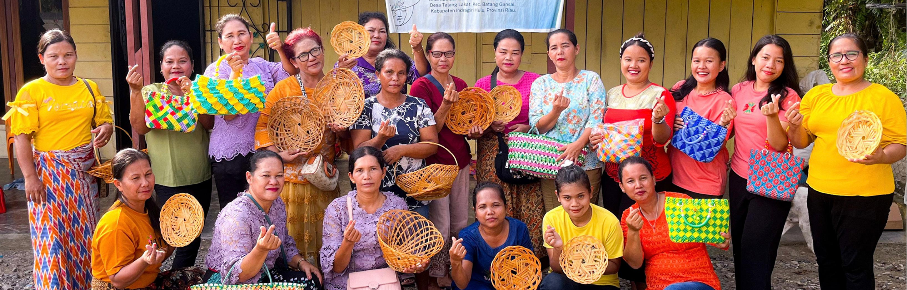

Business Development & Women's Economic Empowerment
Strengthened business & entrepreneurial capacity
Value creation from local resources

Women as drivers of local economic growth

Beyond Certification
Entity certification strengthens farmer organizations by building the systems, governance, and accountability needed to meet certification requirements. It provides a pathway for farmer entities to become more organized, credible, and ready to participate in sustainable value chains.
12,200+
FARMERS TRAINED
1,776 in Indragiri Hulu
1,125 in Rokan Hulu and Rokan Hilir
Equipping farmers across Riau with the knowledge and skills to adopt regenerative and sustainable practices.
"With the support we received, we learned everything from caring for chickens, providing feed, and maintaining their health to keeping records and managing our business finances.”
— Mukinah, Restu Berjaya
"This programme has helped me turn waste into valuable and useful products. I hope maggot cultivation will support my family’s livelihood and continue to grow as an initiative within KWT Mawar.”
— Marianti, KWT Mawar
"We are no longer women who wait. We are drivers of economic growth in our families and villages. Local potential is our strength, and our achievements are proof of what women can accomplish.”
— RIfkha Anisa


 1,776 in Indragiri Hulu
1,776 in Indragiri Hulu